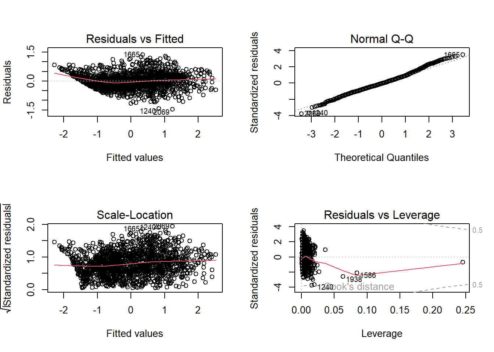

d.meteo = read_excel("meteo_albertville_2023-01-01_2023-04-01.xls",
col_types = c("text", "date", "numeric",
"numeric", "numeric", "numeric",
"numeric", "numeric", "numeric",
"numeric", "numeric"))Projet Modèlisation Linéaires
Introduction :
La pollution de l’air est un enjeu majeur, économique, de santé publique et de préservation de l’environnement. Parmi les différents polluants atmosphériques, l’ozone (O3) occupe une place particulière en raison de ses effets néfastes sur la santé humaine, les écosystèmes et les matériaux. La concentration de l’ozone dans l’atmosphère est le résultat d’un équilibre complexe entre la production et la destruction de ce gaz, impliquant de nombreux facteurs, notamment d’autres polluants et les conditions météorologiques.
Dans ce travail, nous nous intéressons à la modélisation prédictive de la concentration de l’ozone dans la troposphère en fonction de différents polluants atmosphériques et des conditions météorologiques. Plus précisément, notre objectif est de développer un modèle capable de prédire la concentration en ozone à partir de variables telles que les concentrations de polluants primaires (les oxydes d’Azote et les particules fines) et des paramètres météorologiques (température, humidité relative..).
Cette approche s’appuie sur des données de qualité de l’air et de météorologie provenant de la station de surveillance située a Albertville en région Rhône-Alpes. Les modèles proposés se verront diagnostiqués et évalués sur leurs performances en utilisant les outils vus en cours. Nous discuterons également de l’importance relative des différentes variables indépendantes et de leur contribution à la prédiction.
En somme, ce travail vise à améliorer notre compréhension des phénomènes d’accumulation de l’ozone dans les couches basses de l’atmosphère, en mettant en application les techniques statistiques de la modélisation linéaire multivariée.
Construction et prétraitement des sets de travail :
Le(s) dataset(s) qui serviront à la modélisation sont contruits à partir de données brutes des polluants de la station de surveillance d’Albertville. Cette station est choisie car elle offre des données variées et de qualité, en effet cinq polluants atmosphériques sont mesurés avec un taux de panne (des appareils de mesure) très bas et taux de validation haut. Il en est de même pour les données brutes métérologiques, sauf pour le 11 et le 12 février, qui ont été imputés de la station la plus proche “Aillon-le-vieux” car absents sur les mesures de la station d’origine. La distance entre les deux stations étant suffisamment faible pour garder une approximation viable.
Dans la pratique, ces données ont été extraites semaine par semaine, sur treize cycles couvrant du “01/01/2023 au 01/04/2023. Le premier avril est inclus afin de garder la cyclicité des 7 jours, ce cycle pouvant potentiellement intervenir dans la prédiction.
La ville d’albertville n’est pas située dans une région à industrie chimique. Ni concernée par un trafic routier pouvant significativement influencer notre prédiction.
Les données brutes sur les polluants comportent une mesure toutes les heures, tandis que celles de la météo une mesure toutes les 10 mn.
les mesures de polluant auxquelles nous allons nous intérresser sont :
La concentration atmosphérique de l’ozone : O3, en µg/m3.
La concentration atmosphérique du monxyde d’azote : NO, en µg/m3.
La concentration atmosphérique du dioxyde d’azote : NO2, en µg/m3.
La concentration en particules fines de diamètre inférieur à 2.5 µm : PM2.5 , en µg/m3.
La concentration en particules fines de diamètre inférieur à 10 µm : PM10 , en µg/m3.
Les mesures météorologiques auxquelles nous allons nous intérresser sont :
La température : en degrés celsius.
L’humidité : en pourcentage de saturation de l’air ambiant.
La pression atmosphérique : en hectopsacal.
La vitesse du vent : en km/h.
La direction du vent : en degrés , dans le sens trigonométrique.
Les précipitations : en mm/m2 , sur la denière heure, ou denières trois heures.
La construction de nos datasets de travail se fait ensuite en plusieurs étapes en gardant en tête nos objectifs : avoir un maximum de données fiables, sur des variables impliquées potentiellement dans la hausse ou la baisse du taux d’ozone dans l’air.
On commençe par récupérer les données météo, en faisant attention à bien donner le type “date” à la colonne des dates, cette colonne est importante car c’est l’identifiant pour fusionner avec d’autres données :
Ces données comportent des mesures toutes les 10 minutes et des colonnes non utiles. Nous ne gardons qu’une mesure toutes les heures, et les colonnes susceptibles de nous éclairer.
d.meteo = d.meteo[grepl("00:00$", d.meteo$dh_utc), c(2,3,4,5,6,7,9,11)]On récupère ensuite les données sur les polluants atmosphériques, en chargeant les cinq fichiers à notre disposition :
d.ozone = read_csv("ozone_Albertville_2023-01-01_2023-04-01.csv",
col_types = c("T", "numeric", "text"))
d.PM2.5 = read.csv("particules PM2,5_Albertville_2023-01-01_2023-04-01.csv")
d.PM10 = read.csv("particules PM10_Albertville_2023-01-01_2023-04-01.csv")
d.NO2 = read.csv("dioxyde d'azote_Albertville_2023-01-01_2023-04-01.csv")
d.NO = read.csv("monoxyde d'azote_Albertville_2023-01-01_2023-04-01.csv")bIl est légitime de penser que la concentration atmosphérique passée d’un polluant puisse influencer sa concentration future. Dans l’objectif de vérifier cette hypothèse, une colonne des mesures à j-1 est construite pour chaque polluant :
d.ozone.lag = data.frame(dplyr::lag(d.ozone$ozone..µg.m.., 24))
d.PM2.5.lag = data.frame(dplyr::lag(d.PM2.5$particules.PM2.5..µg.m.., 24))
d.PM10.lag = data.frame(dplyr::lag(d.PM10$particules.PM10..µg.m.., 24))
d.NO2.lag = data.frame(dplyr::lag(d.NO2$dioxyde.d.azote..µg.m.., 24))
d.NO.lag = data.frame(dplyr::lag(d.NO$monoxyde.d.azote..µg.m.., 24))On fusionne ensuite toutes les colonnes relatives aux polluants et on les nomme :
d.polluants = cbind(d.ozone[,1:2],
d.ozone.lag ,
d.NO[,2],
d.NO.lag ,
d.NO2[,2],
d.NO2.lag,
d.PM2.5[,2],
d.PM2.5.lag ,
d.PM10[,2],
d.PM10.lag)
colnames(d.polluants) = c("datetime",
"ozone",
"ozone_lag",
"no",
"no_lag",
"no2",
"no2_lag",
"pm2.5",
"pm2.5_lag",
"pm10",
"pm10_lag")On fusionne le résultat avec les données météo, en nous servant de la date et heure de la mesure comme clef d’identification de la ligne :
data = merge(d.polluants, d.meteo, by.x = "datetime", by.y = "dh_utc")Dans l’hypothèse d’une cyclicité hebdomadaire, ou d’une influence du jour de la semaine sur la prédiction, on rajoute une colonne spécifiant le jour de la semaine pour chaque mesure. Cette information est implicite dans la date, elle en est explicitée avec la fonction weekdays() :
data = data %>% dplyr::mutate(weekday = weekdays(datetime))La nouvelle colonne doit ensuite être encodée en factor, en tant que variable catégorielle ayant 7 modalités :
data$weekday = as.factor(data$weekday)Le set de données obtenu comporte des valeurs manquantes, néanmoins nous avons deux indications pour faire une choix de travail:
Le taux de valeurs manquantes est inférieur à 2 %, soit un taux très bas.
L’absence de de ces valeurs est totalement due au hasard ( MCAR ).
Le choix de supprimer les lignes concernées n’entrainera donc pas de biais, ni de perte significative de l’information :
data = na.omit(data)Nous partitionnons ensuite ces données en deux set :
Un set pour entrainer le modèle : 80 % des lignes
Un set pour tester la viabilité du modèle : 20 % des lignes
Cela nous permettera d’évaluer plus tard la justesse des prédiction et de détecter potentiellement des problèmes d’under ou overfitting .
nrows.training = floor(0.8 * nrow(data))
training.indices = sample(seq_len(nrow(data)), size = nrows.training)
training.set = data[training.indices, ]
testing.set = data[-training.indices, ]Nous disposons désormais de deux jeux de données qui vont nous accompagner dans le reste du travail. Nous les sauvegardons en local, pour en disposer sans avoir à refaire toutes les opérations précédentes :
save(training.set, file = "training_set.RData")
save(testing.set, file = "testing_set.RData")Description et visualisation des données :
Disposant désormais d’un jeu de données nettoyé et prêt à l’emploi, le prochain pas est d’essayer de le comprendre et de détecter la nature des relations entre les variables, soit formellement soit par intuition graphique.
Le jeu de donnée se présente ainsi :
kable(training.set[1:6,1:10])| datetime | ozone | ozone_lag | no | no_lag | no2 | no2_lag | pm2.5 | pm2.5_lag | pm10 | |
|---|---|---|---|---|---|---|---|---|---|---|
| 1470 | 2023-03-05 05:00:00 | 17.4 | 23.0 | 1.3 | 0.7 | 13.4 | 19.2 | 39.7 | 56.1 | 43.8 |
| 675 | 2023-01-30 01:00:00 | 16.9 | 26.0 | 1.7 | 1.5 | 23.5 | 18.3 | 30.9 | 21.2 | 33.9 |
| 1040 | 2023-02-14 20:00:00 | 16.9 | 16.4 | 7.0 | 6.6 | 48.7 | 46.6 | 13.1 | 14.6 | 27.6 |
| 2072 | 2023-03-30 09:00:00 | 8.5 | 66.6 | 13.4 | 1.7 | 32.1 | 11.6 | 17.4 | 4.2 | 52.4 |
| 850 | 2023-02-06 09:00:00 | 11.6 | 6.7 | 12.5 | 15.3 | 38.3 | 25.7 | 11.0 | 10.3 | 19.2 |
| 34 | 2023-01-02 09:00:00 | 20.1 | 5.7 | 4.4 | 7.8 | 20.0 | 13.8 | 4.1 | 6.0 | 8.9 |
kable(training.set[1:6,11:15])| pm10_lag | temperature_degC | pression_hPa | humidite_percent | point_de_rosee_degC | |
|---|---|---|---|---|---|
| 1470 | 61.6 | -1.4 | 1017.9 | 95 | -2.1 |
| 675 | 22.6 | -5.9 | 1028.2 | 92 | -7.0 |
| 1040 | 25.8 | 3.1 | 1032.8 | 74 | -1.1 |
| 2072 | 12.2 | 10.9 | 1020.1 | 79 | 7.4 |
| 850 | 14.5 | -1.9 | 1033.3 | 94 | -2.7 |
| 34 | 9.4 | 10.1 | 1024.4 | 60 | 2.7 |
kable(training.set[1:6,16:19])| vent_moyen_kmH | vent_direction_degres | pluie_1h_mm | weekday | |
|---|---|---|---|---|
| 1470 | 2 | 148 | 0 | dimanche |
| 675 | 0 | 187 | 0 | lundi |
| 1040 | 2 | 157 | 0 | mardi |
| 2072 | 1 | 354 | 0 | jeudi |
| 850 | 0 | 165 | 0 | lundi |
| 34 | 0 | 244 | 0 | lundi |
Le jeu comporte actuellement 19 colonnes de données pour 1674 lignes de trainning.
Il est possible d’avoir une description statistique des différentes variables :
summary(training.set) datetime ozone ozone_lag
Min. :2023-01-02 00:00:00.00 Min. : 2.60 Min. : 2.60
1st Qu.:2023-01-25 06:15:00.00 1st Qu.: 17.70 1st Qu.: 17.12
Median :2023-02-17 07:30:00.00 Median : 34.30 Median : 32.85
Mean :2023-02-16 17:15:22.57 Mean : 37.21 Mean : 36.37
3rd Qu.:2023-03-11 11:45:00.00 3rd Qu.: 54.70 3rd Qu.: 53.70
Max. :2023-04-01 23:00:00.00 Max. :102.40 Max. :102.40
no no_lag no2 no2_lag
Min. : 0.200 Min. : 0.200 Min. : 1.20 Min. : 1.20
1st Qu.: 0.900 1st Qu.: 1.000 1st Qu.:11.00 1st Qu.:11.20
Median : 1.900 Median : 1.900 Median :18.40 Median :18.55
Mean : 4.871 Mean : 5.002 Mean :21.12 Mean :21.24
3rd Qu.: 4.800 3rd Qu.: 5.000 3rd Qu.:28.60 3rd Qu.:29.00
Max. :55.600 Max. :55.600 Max. :71.10 Max. :71.10
pm2.5 pm2.5_lag pm10 pm10_lag
Min. : 0.50 Min. : 0.50 Min. : 1.30 Min. : 1.30
1st Qu.: 5.50 1st Qu.: 5.70 1st Qu.: 8.90 1st Qu.: 9.30
Median :11.25 Median :11.50 Median :16.70 Median :16.90
Mean :13.45 Mean :13.63 Mean :19.18 Mean :19.45
3rd Qu.:18.30 3rd Qu.:18.60 3rd Qu.:26.77 3rd Qu.:27.00
Max. :56.10 Max. :56.10 Max. :70.90 Max. :71.60
temperature_degC pression_hPa humidite_percent point_de_rosee_degC
Min. :-11.500 Min. : 988.4 Min. : 36.00 Min. :-12.5000
1st Qu.: -0.900 1st Qu.:1014.3 1st Qu.: 77.00 1st Qu.: -3.1000
Median : 2.800 Median :1020.2 Median : 87.00 Median : 0.6000
Mean : 2.885 Mean :1021.0 Mean : 83.85 Mean : 0.2146
3rd Qu.: 6.300 3rd Qu.:1029.5 3rd Qu.: 94.00 3rd Qu.: 3.8000
Max. : 17.600 Max. :1040.4 Max. :100.00 Max. : 10.0000
vent_moyen_kmH vent_direction_degres pluie_1h_mm weekday
Min. :0.000 Min. : 0 Min. : 0.0000 dimanche:222
1st Qu.:0.000 1st Qu.:152 1st Qu.: 0.0000 jeudi :245
Median :1.000 Median :175 Median : 0.0000 lundi :246
Mean :0.975 Mean :181 Mean : 0.1534 mardi :230
3rd Qu.:1.000 3rd Qu.:216 3rd Qu.: 0.0000 mercredi:256
Max. :7.200 Max. :359 Max. :11.8000 samedi :225
vendredi:250 Ce résumé de statistiques descriptives permet de nous rassurer sur la structure du jeu, il n’y a pas a priori de valeurs aberrantes sautant aux yeux. Et la construction des colonnes dérivées semble avoir bien fonctionné.
Jetons un oeil aux liens entre les variables, en nous fiant au coefficient de corrélation , et à la distribution de chaque variable en fonction des autres.
Considérons d’abord l’ozone par rapport aux autres polluants atmosphériques :
ggpairs(training.set[, c(2,4,6,8,10)])La concentration de l’ozone semble fortement et négativement corrélée à celle du dioxyde d’azote.
La distribution de l’ozone par rapport aux autres polluants semble suivre un motif en particulier pour le monoxyde et dioxyde d’azote.
De même pour les concentrations des polluants la veille de la mesure considérée :
ggpairs(training.set[, c(2,3,5,7,9,11)])Sans surprise, nous pouvons constater que la concentration de l’ozone est fortement et positivement corrélée à sa concentration 24 h avant.
Considérons maintenant l’ozone par rapport aux conditions météo :
ggpairs(training.set[, c(2,12,13,14,16,17,18)])La concentration de l’ozone semble positivement corrélée à la température et négativement à l’humidité.
La distribution de la direction du vent est apriori indépendante de la concentration d’ozone.
Essayons d’explorer le lien entre la concentration de l’ozone et le jour de la semaine, pour détecter éventuellement un effet de l’activité humaine (trafic routier par exemple) sur sa concentration :
ggpairs(training.set[, c(2,19)], aes(color=weekday))`stat_bin()` using `bins = 30`. Pick better value with `binwidth`.
La distribution de la concentration d’ozone semble être affectée par le jour de la semaine.
La prise en considération du coefficient de corrélation de Pearson, ainsi que les constatations graphiques, nous permettent de ne pas rejeter d’emblée la modélisation linéaire comme outil possible de prédiction de la concentration de l’ozone en fonction de ces variables.
C’est ce que nous tâcherons de faire au mieux dans la suite.
Exploration vers un modèle pertinent :
Les données dont nous disposons n’ont pas la même unité de mesure, ainsi que des moyennes et variances différentes. Nous commençons par centrer-reduire les données que nous allons exploiter dans la modélisation :
# on stocke dans dtcr ( data training centrée réduite) les données d'entrainement centrées réduites
dtcr = data.table::copy(training.set)
moyennes = apply(dtcr[ ,2:18], 2, mean)
ecarts_types_biaisés = apply(dtcr[ ,2:18], 2, sd) * (sqrt(1673/1674))
centree = sweep(dtcr[ , 2:18], 2, moyennes, "-")
centree_reduite = sweep(centree, 2, ecarts_types_biaisés, "/")
dtcr[ , 2:18] = centree_reduiteNotons que lors de cette normalisation , nous gardons les données de moyenne et d’écart type du set de training, pour les appliquer au centrage-reduction des données de testing plus tard.
Une première modélisation avec toutes les variables est réalisée afin d’avoir un premier aperçu de leurs significativité dans la prédiction :
lmod_0 = lm(ozone~., data = dtcr[, 2:18]) # colonne datetime non incluse
summary(lmod_0)
Call:
lm(formula = ozone ~ ., data = dtcr[, 2:18])
Residuals:
Min 1Q Median 3Q Max
-1.52747 -0.24931 -0.01619 0.23065 1.33861
Coefficients:
Estimate Std. Error t value Pr(>|t|)
(Intercept) 5.944e-16 9.575e-03 0.000 1.00000
ozone_lag 6.598e-01 1.519e-02 43.438 < 2e-16 ***
no 1.194e-02 1.492e-02 0.800 0.42366
no_lag -3.578e-02 1.486e-02 -2.408 0.01616 *
no2 -6.117e-01 1.779e-02 -34.384 < 2e-16 ***
no2_lag 4.511e-01 1.932e-02 23.347 < 2e-16 ***
pm2.5 -4.764e-02 3.479e-02 -1.369 0.17104
pm2.5_lag -4.828e-03 3.246e-02 -0.149 0.88178
pm10 -1.744e-01 3.259e-02 -5.353 9.86e-08 ***
pm10_lag 1.428e-01 2.856e-02 4.999 6.37e-07 ***
temperature_degC -4.924e-01 1.696e-01 -2.903 0.00375 **
pression_hPa -9.418e-02 1.094e-02 -8.613 < 2e-16 ***
humidite_percent -4.234e-01 8.246e-02 -5.135 3.15e-07 ***
point_de_rosee_degC 3.739e-01 1.500e-01 2.493 0.01278 *
vent_moyen_kmH -5.449e-03 1.042e-02 -0.523 0.60117
vent_direction_degres 2.441e-02 9.730e-03 2.509 0.01221 *
pluie_1h_mm 5.183e-02 1.028e-02 5.041 5.15e-07 ***
---
Signif. codes: 0 '***' 0.001 '**' 0.01 '*' 0.05 '.' 0.1 ' ' 1
Residual standard error: 0.3918 on 1657 degrees of freedom
Multiple R-squared: 0.8481, Adjusted R-squared: 0.8466
F-statistic: 578.1 on 16 and 1657 DF, p-value: < 2.2e-16On constate que les residuals semblent être normalement distribuées de part et d’autre de leur médiane. La normalité des residus sera vérifié avec les bons outils sur le modèle choisi, pour l’instant la statistique descriptive permet juste de donner une indication rassurante.
L’hypothèse qu’aucune des variables prédictives ne puisse participer à expliquer la variable à prédire est rejetée avec une p-value infiniment petite.
Le nombre de variables prédictives est néanmoins élevé et avec des significativités inégales. Une stratégie backwards peut être mise en oeuvre pour ajuster un fit et éliminer pas à pas les variables les moins significatives.
Dans un but de reproductibilité et de concision, je propose la fonction suivante pour réaliser cette élimination :
# inspirée du TD 6 , et du cours de la programmation objet
backwards = function(model, alpha){
resultat = model
condition = TRUE
while (condition) {
sommaire = summary(resultat)
pvals = sommaire$coefficients[,4]
nom_colonne = names(sort(pvals[pvals > alpha], decreasing = TRUE)[1])
condition = (is.na(nom_colonne)==FALSE)
if (condition){
if (nom_colonne == "(Intercept)"){nom_colonne = 1 }
formule = paste0(". ~ . - ",nom_colonne)
resultat = update(resultat, formule)
}
}
return(resultat)
}Cette fonction prend en argument le modèle contenant toutes les variables, ainsi qu’un seuil de significativité alpha. Elle retourne un modèle prenant en compte que les variables respectant le seuil de significativité imposé, après avoir éliminé dans l’ordre les variables respectant le moins ce seuil.
Essayons à présent avec un seuil alpha = 0.05 :
alpha = 0.05
lmod_1 = backwards(lmod_0, alpha)
summary(lmod_1)
Call:
lm(formula = ozone ~ ozone_lag + no_lag + no2 + no2_lag + pm10 +
pm10_lag + temperature_degC + pression_hPa + humidite_percent +
point_de_rosee_degC + vent_direction_degres + pluie_1h_mm -
1, data = dtcr[, 2:18])
Residuals:
Min 1Q Median 3Q Max
-1.46940 -0.24731 -0.01579 0.23719 1.34133
Coefficients:
Estimate Std. Error t value Pr(>|t|)
ozone_lag 0.661710 0.014752 44.855 < 2e-16 ***
no_lag -0.026041 0.012606 -2.066 0.03901 *
no2 -0.603564 0.015391 -39.214 < 2e-16 ***
no2_lag 0.449682 0.018641 24.123 < 2e-16 ***
pm10 -0.214000 0.016121 -13.275 < 2e-16 ***
pm10_lag 0.130740 0.015759 8.296 < 2e-16 ***
temperature_degC -0.521234 0.166740 -3.126 0.00180 **
pression_hPa -0.093842 0.010782 -8.703 < 2e-16 ***
humidite_percent -0.442864 0.080238 -5.519 3.94e-08 ***
point_de_rosee_degC 0.407395 0.146746 2.776 0.00556 **
vent_direction_degres 0.022908 0.009647 2.375 0.01768 *
pluie_1h_mm 0.050662 0.010219 4.958 7.86e-07 ***
---
Signif. codes: 0 '***' 0.001 '**' 0.01 '*' 0.05 '.' 0.1 ' ' 1
Residual standard error: 0.3916 on 1662 degrees of freedom
Multiple R-squared: 0.8477, Adjusted R-squared: 0.8466
F-statistic: 771.2 on 12 and 1662 DF, p-value: < 2.2e-16Cette première modélisation garde une douzaine de variables pour un coefficient de determination honorable de 0.84.
En baissant le risque de premier espèce alpha à 0.0001, c’est à dire en baissant le risque de garder une variable alors que son coefficient serait nul, nous obtenons :
alpha = 0.0001
lmod_2 = backwards(lmod_0, alpha)
summary(lmod_2)
Call:
lm(formula = ozone ~ ozone_lag + no2 + no2_lag + pm10 + pm10_lag +
temperature_degC + pression_hPa + humidite_percent + pluie_1h_mm -
1, data = dtcr[, 2:18])
Residuals:
Min 1Q Median 3Q Max
-1.47014 -0.24957 -0.01708 0.23718 1.36717
Coefficients:
Estimate Std. Error t value Pr(>|t|)
ozone_lag 0.66991 0.01462 45.835 < 2e-16 ***
no2 -0.60603 0.01543 -39.272 < 2e-16 ***
no2_lag 0.44051 0.01757 25.071 < 2e-16 ***
pm10 -0.20931 0.01607 -13.021 < 2e-16 ***
pm10_lag 0.13083 0.01577 8.294 2.24e-16 ***
temperature_degC -0.06396 0.01171 -5.462 5.43e-08 ***
pression_hPa -0.09163 0.01079 -8.490 < 2e-16 ***
humidite_percent -0.22539 0.01270 -17.742 < 2e-16 ***
pluie_1h_mm 0.04939 0.01026 4.816 1.60e-06 ***
---
Signif. codes: 0 '***' 0.001 '**' 0.01 '*' 0.05 '.' 0.1 ' ' 1
Residual standard error: 0.3934 on 1665 degrees of freedom
Multiple R-squared: 0.8461, Adjusted R-squared: 0.8452
F-statistic: 1017 on 9 and 1665 DF, p-value: < 2.2e-16Nous arrivons dans ce cas à ne garder que 9 variables pour un coefficient de détermination ayant à peine baissé.
Pour savoir si les deux modèles obtenus, l’un avec 12 variables et l’autre avec seulement 9, sont significativement différents, on les soumet à une analyse de la variance avec un test de fisher ayant pour statistique :
F = ((RSS1 - RSS2) / (p2 - p1)) / (RSS2 / (n - p2))
anova(lmod_2, lmod_1)Analysis of Variance Table
Model 1: ozone ~ ozone_lag + no2 + no2_lag + pm10 + pm10_lag + temperature_degC +
pression_hPa + humidite_percent + pluie_1h_mm - 1
Model 2: ozone ~ ozone_lag + no_lag + no2 + no2_lag + pm10 + pm10_lag +
temperature_degC + pression_hPa + humidite_percent + point_de_rosee_degC +
vent_direction_degres + pluie_1h_mm - 1
Res.Df RSS Df Sum of Sq F Pr(>F)
1 1665 257.69
2 1662 254.88 3 2.8092 6.1062 0.0003955 ***
---
Signif. codes: 0 '***' 0.001 '**' 0.01 '*' 0.05 '.' 0.1 ' ' 1La p_value de ce test est faible , elle nous permet de rejeter l’hypothèse que lmod_1 lmod_2 soient équivalents.
Les deux modèles sont donc significativement différents, la tentation est grande de choisir le modèle le plus économe par “principe de parcimonie”, mais pour cela il faut s’appuyer sur des arguments tengibles.
Nous avons vu que le critère du R² ajusté était presque égale entre les deux modèles. essayons de faire le tour des autres critères :
# proposition de fonction pour calculer le critère de mallow:
Cp = function(modelComplet, modelPartiel ){
summary1 = summary(modelComplet)
summary2 = summary(modelPartiel)
RSS_p = sum(summary2$residuals^2)
sigma2= summary1$sigma^2
n = nrow(modelPartiel$model)
p = ncol(modelPartiel$model)
mallow = (RSS_p/sigma2)-(n-(2*p))
return(mallow)
}
# critère de Mallow:
mallow_1 = Cp(lmod_0, lmod_1)
mallow_2 = Cp(lmod_0, lmod_2)
# critère AKAIKE:
aic_1 = AIC(lmod_1)
aic_2 = AIC(lmod_2)
# critère BIC :
bic_1 = BIC(lmod_1)
bic_2 = BIC(lmod_2)
# tableau :
tableau = data.frame( modeles = c("lmod_1", "lmod_2"),
MALLOW = c(mallow_1, mallow_2),
AIC = c(aic_1, aic_2),
BIC = c(bic_1, bic_2)
)
tableau modeles MALLOW AIC BIC
1 lmod_1 12.6457 1625.816 1696.315
2 lmod_2 24.9493 1638.166 1692.395Le critère d’information bayésien penche en faveur du modèle 2 en étant minimal à 1637.244 contre 1639.045 . Le critère de l’AKAIKE est sensiblement proche entre les deux. Des éléments contextuels comme l’économie de ressources et l’interprétabilité favorisent le choix de peu de variables dans le modèle.
La balance penche en conséquence vers lmod_2 qui sera donc retenu pour continuer.
Diagnostic du modèle :
Le diagnostic sera mené sur tous les points de contrôle , même si une condition est insatisfaite. Au terme du diagnostic complet une décision sera prise en fonction des résultats.
1- Vérifier les hypothèses sur les Erreurs :
1.1- Homoscédasticité : constance de la variance des Erreurs:
Graphiquement : Plotter les résiduelles en fonction de des Y estimés, pour détecter une potentielle inconstance de la variance des erreurs, l’Hétéroscédasticité :
plot(fitted(lmod_2), residuals(lmod_2), xlab="Fitted", ylab="Residuals") abline(h=0, col="red")Une variance constante de erreurs aurait du se manifester graphiquement par une symetrie de distribution des erreurs de part et d’autre de l’axe rouge. Le graphique obtenu suggère un problème d’hétéroscédasticité (potentiellement aussi un problème de linéarité dans la structure globale du modèle).
Numériquement : L’indication graphique peut être consolidée par une recherche numérique, en vérifiant l’hypothèse par exemple que les erreurs puissent varier en fonction des y estimés :
summary(lm(sqrt(abs(residuals(lmod_2)))~fitted(lmod_2)))
Call:
lm(formula = sqrt(abs(residuals(lmod_2))) ~ fitted(lmod_2))
Residuals:
Min 1Q Median 3Q Max
-0.50149 -0.15624 -0.00832 0.14827 0.66069
Coefficients:
Estimate Std. Error t value Pr(>|t|)
(Intercept) 0.502599 0.005451 92.196 < 2e-16 ***
fitted(lmod_2) 0.039917 0.005927 6.735 2.24e-11 ***
---
Signif. codes: 0 '***' 0.001 '**' 0.01 '*' 0.05 '.' 0.1 ' ' 1
Residual standard error: 0.223 on 1672 degrees of freedom
Multiple R-squared: 0.02641, Adjusted R-squared: 0.02583
F-statistic: 45.36 on 1 and 1672 DF, p-value: 2.244e-11Cette modélisation, indique que la racine de la valeur absolue d’une erreur peut, de façon très significative, être exprimée en fonction de la concentration d’ozone estimée.
Il existe donc un problème sur l’hypothèse de l’homoscédasticité dans notre modèle.
1.2- Normalité de la distribution des erreurs :
Graphiquement : Plot QQNorm, c’est à dire le quantile d’une erreur observé, en fonction de son quantile théorique de la loi normale :
qqnorm(residuals(lmod_2), ylab="Residuals" , main="QQnorm des erreurs") qqline(residuals(lmod_2), col="green")
Le graphique permet de constater un motif avec un écart de la ligne de référence, surtout aux extrémités, des valeurs théoriques devant être respectées si les erreurs étaient distribuées normalement.
Le motif suggère que les valeurs extrêmes sont plus probables dans les erreurs observées que dans une distribution normale. Et que les queues de distributions des erreurs observées sont plus épaisses que celles de la loi normale.
Numériquement :
shapiro.test(residuals(lmod_2))Shapiro-Wilk normality test data: residuals(lmod_2) W = 0.99295, p-value = 3.61e-07
L’hypothèse Ho que la distribution des erreurs soit normalement distribuée est rejetée avec une p-value très faible.
Il existe donc un problème sur l’hypothèse de la normalité de distribution des erreurs dans notre modèle.
2- Détecter les obserations atypiques :
2.1- Les points leviers :
Les points leviers sont des valeur extrêmes dans les predicteurs, ayant le potentiel de changer significativement le fit.
Graphiquemnt :
# obtention de l'influence de chaque observation sur l'ajustement mesures_leviers = hatvalues(lmod_2) # plotter le quantile normal théorique de la mesure halfnorm(mesures_leviers, ylab= "leviers")Le graphique suggère la présence de points leviers en particulier les mesures 1116 et 144.
Numériquement : le seuil couramment utilisé pour qualifier de point levier est le suivant :
mesure d’influence > 2*(p)/n
# calculer le Seuil
seuil = (2*9)/1674
# récuperer les points levier identifiés numériquement
mesures_leviers_retenus = data.frame(mesures_leviers[mesures_leviers > seuil])
dim(mesures_leviers_retenus)[1] 114 1Le seuil choisi, permet d’identifier 114 observations passibles d’avoir disproportionnellement impacté l’ajustement. Un correctif potentiel est de supprimer ces observations et d’évaluer l’impact sur la modélisation.
2.2- les valeurs aberrantes (outliers) :
Une valeur potentiellement aberrante aura tendance à s’écarter fortement du reste des données de l’échantillon, et par conséquent il y aura une probabilité faible d’observer cette valeur.
Après le calcul des residus studentisés, on applique la correction de Bonféroni pour calculer les seuils qui doivent attirer notre attention pour observer de près une ligne de mesure : pour un seuil de significativité alpha, la correction consiste à diviser ce seuil par le nombre d’observations.
alpha = 0.05
df = 1665
n = 1674
stud = rstudent(lmod_2)
seuil_critique_bonferoni_abs = abs(qt(alpha/(n*2), df))
outliers = which(abs(stud) > seuil_critique_bonferoni_abs)
length(outliers)[1] 0Dans notre cas, nous n’avons pas de valeurs aberrantes. Dans le cas ou il y en aurait eu, il aurait fallu étudier chaque observation concerné pour décider de la suppression ou pas. En effet une valeur aberrante n’est pas forcément fausse, elle est même souvent l’occasion de découvrir des aspects nouveaux d’un phénomène.
2.3- Les points d’influence :
On procède au calcul de la distance de cook et
cook = cooks.distance(lmod_2)
halfnorm(cook)Plusieurs points d’influence sont détectés en particulier l’observation 1116 et 252. Il peut être envisagé de supprimer dégressivement et une à une chaque point d’influence et d’observer le comportement d’un nouveau modèle entrainé sur les données dépourvues de ce point d’influence.
3- Structure du modèle :
3.1- Structure générale :
par(mfrow=c(2,2))
plot(lmod_2)
L’observation des différents graphes, en particulier celui des residus en fonction des estimations, permet de détecter des déficiences dans la structure globale du modèle, en effet il existe potentiellement un problème de Linéarité.
3.2- Par Variable :
La fonction termplot est utilisée ici afin de visualiser l’effet d’une variable prédictive sur la concentration en ozone, en éliminant l’influence des autres variable :
par(mfcol = c(3, 3))
# Par variable ( terms = num var indep)
termplot(lmod_2, partial.resid = TRUE, terms = 1)
termplot(lmod_2, partial.resid = TRUE, terms = 2)
termplot(lmod_2, partial.resid = TRUE, terms = 3)
termplot(lmod_2, partial.resid = TRUE, terms = 4)
termplot(lmod_2, partial.resid = TRUE, terms = 5)
termplot(lmod_2, partial.resid = TRUE, terms = 6)
termplot(lmod_2, partial.resid = TRUE, terms = 7)
termplot(lmod_2, partial.resid = TRUE, terms = 8)
termplot(lmod_2, partial.resid = TRUE, terms = 9)
Avec cette visualisation dissociée, on observe également des motifs clairement non linéaires, en particulier pour l’humidité et la pluie.
4- Conclusions du diagnostic :
Le modèle choisi, bien qu’ayant relativement peu d’observations atypiques, souffre de carences sur les hypothèses de base. En effet il montre à la fois un problème de Linéarité et de variance des erreurs.
La suppression des observations atypiques ne suffit pas à lisser ces carences.
Les causes possibles sont nombreuses :
Autocorrélation à cause des variables laggées ?
La relation précurseur-composé entre des polluants ?
…
Le diagnostic nous pousse à reprendre le modèle en main et à trouver des solutions. Soit en estimant les coefficients Beta indépendamment de l’hypothèse de la normalité des erreurs. Soit en trouvant une transformation du modèle permettant de corriger les carences.
Prise en compte du diagnostic et correctifs :
1- Estimation bootstrap des coefficients :
Cette technique permet de s’affranchir de l’hypothèse de la normalité de distribution des erreurs dans le calcul d’un intervalle de confiance des coefficients.
alpha = 0.05
model = lmod_2
# Fixer le nombre de tirages :
nbr_tirages = 4000
# Garder le même résultat si réexecution de la chunk
set.seed(123)
# Créer la matrice qui contiendra les coeffs Beta de chaque itération
p = length(model$coefficients)
matrice_coeffs = matrix(NA, nbr_tirages, p)
colnames(matrice_coeffs) = names(model$coefficients)
# récupérer les residuals et les fitted
residuals = residuals(model)
fitted = fitted(model)
# Réaliser les tirages avec remise et remplir la matrice des coeffs
for(i in 1:nbr_tirages){
booty = fitted + sample(residuals, rep=TRUE)
model_i = update(model, booty ~ .)
matrice_coeffs[i,]= coef(model_i)
}
# Obtenir l'intervalle de confiance pour chaque predicteur
CIs = apply(matrice_coeffs, 2, function(x) quantile(x, c((alpha/2), 1-(alpha/2))))
CIS = t(CIs)
CIS = cbind(CIS, coefficients(lmod_2))
colnames(CIS)[1] = "seuil 2.5% "
colnames(CIS)[2] = "seuil 97.5%"
colnames(CIS)[3] = "valeur modele"
kable(CIS)| seuil 2.5% | seuil 97.5% | valeur modele | |
|---|---|---|---|
| ozone_lag | 0.6410145 | 0.6991110 | 0.6699123 |
| no2 | -0.6356981 | -0.5754883 | -0.6060297 |
| no2_lag | 0.4054103 | 0.4744117 | 0.4405099 |
| pm10 | -0.2413869 | -0.1793067 | -0.2093053 |
| pm10_lag | 0.1003170 | 0.1623675 | 0.1308309 |
| temperature_degC | -0.0871139 | -0.0412115 | -0.0639615 |
| pression_hPa | -0.1122481 | -0.0703552 | -0.0916283 |
| humidite_percent | -0.2510233 | -0.2000072 | -0.2253892 |
| pluie_1h_mm | 0.0299981 | 0.0692823 | 0.0493919 |
Les intervalles de confiance obtenus par le bootstrap, restent cohérents avec les valeurs des coefficients obtenus par la modélisation :
Les intervalles sont étroits, et les bornes de chaque sont de même signe.
Chaque coefficient est inclus dans l’intervalle de confiance qui lui correspond.
Chaque coefficients est bien centré dans l’intervalle de confiance qui lui correspond.
Ceci est un argument en faveur de la modélisation linéaire diagnostiquée :
L’hétéroscedasticité détectée ne semble pas suffisamment forte pour polluer le calcul des coefficients des prédicteurs du modèle.
Les coefficients obtenus par la modélisation peuvent être considérés en gardant en tête les lacunes du modèle.
2- Transformation du modèle :
2.1- Reflexion :
L’objectif ici est de s’inspirer du modèle précécédent, en prenant en compte ses indications et ses carences, pour développer un modèle de meilleur qualité et précision, et qui se conforme aux hypothèses de la normalité et de la constance des variances des erreurs. Ces hypothèses étant nécéssaires aux méthodes d’estimation par moindres carrés.
Les différentes visualisations graphiques précédentes permettent d’éliminer une modélisation polynomiale qui donnerait des réponses moins linéaires encore.
La piste qu’une puissance de Y puisse être une combinaison linéaire des prédicteurs est néanmoins plausible.
Pour explorer cette piste : y^lambda = beta_0 + beta_1 X1 + beta_2 X2 + ..+beta_p Xp
Il est peut être chronophage et arbitraire ( à notre niveau limité de connaissance ) de se lancer dans des choix de test de valeurs lambda au hasard.
Il est plus prudent de trouver une méthode permettant mathématiquement de cibler cette valeur.
Nous allons nous servir de la transformée Box-Cox qui permet de trouver le paramètre lambda optimal pour la linéarité de l’équation.
La transformée Box-Cox est une méthode efficace conçue pour des réponses Y strictement positives. Elle calcule le log-vraisemblance pour un set de valeurs de lambda en transformant la variable réponse selon la formule gλ(y). Ensuite elle cherche à trouver la valeur lambda qui maximise ce log-vraisemblance. Cela revient à trouver la valeur de lambda optimale pour notre équation.
2.2- Application :
La transformée Cox-Box étant apppliquée à des réponses positives, nous exploiterons ici les données du training set non centrées et non réduites :
Lmod_non_transformee = lm(ozone~., data =training.set[, 2:18])
boxcox(Lmod_non_transformee, lambda = seq(-2, 2, by = 0.1))
Un premier set de test de valeurs lambda permet de la situer entre 0.4 et 0.7
boxcox(Lmod_non_transformee, lambda = seq(0.4, 0.7, by = 0.1))Une deuxième itération permet d’affiner cette valeur et de la situer aux alentours de 0.537. Cette valeur sera prise pour transformer le modèle :
lmod_transformee= lm(ozone^0.537~. , data =training.set[, 2:18])
par(mfrow = c(2,2))
plot(lmod_transformee)Cette transformation montre une amélioration nette de la normalité ( graphe “normal Q-Q”) et de l’homoscédasticité ( graphe “residuals vs fitted” et “scale location”).Numériquement nous constatons une augmentation nette de la p-value d’un test de shapiro appliqué aux residuals de ce modèle :
shapiro.test(lmod_transformee$residuals)
Shapiro-Wilk normality test
data: lmod_transformee$residuals
W = 0.99737, p-value = 0.006906Cette transformation a donc été bénéfique pour la modélisation.
Essayons de gagner encore en qualité, supprimons les variables non significatives , avec l’aide de notre fonction construite précédemment backwards(), le seuil de significativité est fixé à 0.05 :
lmod_transformee_plus1 = backwards(lmod_transformee, 0.05)Et supprimons les observations atypiques de la data des variables qui ont été maintenues par la procédure backward :
# récupérer les variables significatives du jeu training
training.set.final = training.set[, c(2,3,4,6,7,8,10,11,12,13, 14,15,17,18)]
# supprimer les points leviers :
leviers = hatvalues(lmod_transformee_plus1)
seuil = (2*14)/1674
leviers_retenus = data.frame(leviers[leviers > seuil])
training.set.final = training.set.final[!(rownames(training.set.final) %in% rownames(leviers_retenus)),]
# supprimer mesures aberrantes :
alpha = 0.05
df = 1550
n = 1564 # les set est déjà débarrassé des 110 points leviers
stud = rstudent(lmod_transformee_plus1)
seuil_critique_bonferoni_abs = abs(qt(alpha/(n*2), df))
outliers = which(abs(stud) > seuil_critique_bonferoni_abs)
length(outliers) # = 0 , => zéro outliers trouvés[1] 0# supprimer les points d'influence
cook = cooks.distance(lmod_transformee_plus1)
indices_influents = which(cook > 4/1564) # règle empirique
training.set.final = training.set.final[-indices_influents, ]Dans cette épuration, nous avons pu supprimer 111 points leviers et 87 points d’influence.
Regardons l’effet sur la modélisation :
final_model = backwards(lm(ozone^0.537~., data = training.set.final), 0.05)
par(mfrow=c(2,2))
plot(final_model)Les graphes de la structure du modèle montrent une amélioration supplémentaire de la normalité de la distribution des résidus et de leurs homoscédasticité.
Observons les coefficients du modèle :
summary(final_model)
Call:
lm(formula = ozone^0.537 ~ ., data = training.set.final)
Residuals:
Min 1Q Median 3Q Max
-2.42786 -0.57516 0.03071 0.53946 2.80878
Coefficients:
Estimate Std. Error t value Pr(>|t|)
(Intercept) 49.8358182 3.4465444 14.460 < 2e-16 ***
ozone_lag 0.0698919 0.0015385 45.430 < 2e-16 ***
no -0.0347406 0.0053000 -6.555 7.69e-11 ***
no2 -0.1120249 0.0034121 -32.832 < 2e-16 ***
no2_lag 0.0842878 0.0034482 24.444 < 2e-16 ***
pm2.5 -0.0335451 0.0084633 -3.964 7.74e-05 ***
pm10 -0.0148736 0.0072657 -2.047 0.04083 *
pm10_lag 0.0272142 0.0033364 8.157 7.32e-16 ***
temperature_degC -0.6176848 0.0974476 -6.339 3.08e-10 ***
pression_hPa -0.0300868 0.0026754 -11.246 < 2e-16 ***
humidite_percent -0.1510374 0.0186652 -8.092 1.22e-15 ***
point_de_rosee_degC 0.5842626 0.1001639 5.833 6.68e-09 ***
vent_direction_degres 0.0008036 0.0002709 2.967 0.00306 **
pluie_1h_mm 0.4014431 0.0662569 6.059 1.74e-09 ***
---
Signif. codes: 0 '***' 0.001 '**' 0.01 '*' 0.05 '.' 0.1 ' ' 1
Residual standard error: 0.8879 on 1467 degrees of freedom
Multiple R-squared: 0.8685, Adjusted R-squared: 0.8673
F-statistic: 745.2 on 13 and 1467 DF, p-value: < 2.2e-16Nous avons en fin compte un modèle avec 12 variables prédictives et 13 coefficients dont l’interprétation sémantique est :
L’intercept : c’est la valeur estimée de la concentration atmosphérique en ozone si toutes les variables prédictives avaient une valeur de zéro.
coefficient Ozone_lag : le prédicteur est la concentration en ozone 24 heures avant. Si toutes les autres variables sont maintenues constantes, l’augmentation de 100 µg/m3 de la concentration d’ozone de “la veille”, augmentera de 7.02 µg/m3 la réponse c’est à dire la concentration atmosphérique en ozone du jour considéré.
coefficient no : le prédicteur est la concentration en monoxyde d’azone. Si toutes les autres variables sont maintenues constantes, l’augmentation de 100 µg/m3 de la concentration atmosphérique en monoxyde d’azote, diminuera de 3.88 µg/m3 la réponse, c’est à dire la concentration atmosphérique en ozone.
coefficient no2 : Le prédicteur est la concentration en dioxyde d’azote. Si toutes les autres variables sont maintenues constantes, l’augmentation de 100 µg/m3 de la concentration atmosphérique en dioxyde d’azote, diminuera de 11.23 µg/m3 la réponse, c’est à dire la concentration atmosphérique en ozone.
coefficient no2_lag : le prédicteur est la concentration en dioxyde d’azote 24h avant. Contrairement à la concentration du jour en NO2, La concentration atmosphérique de la veille en NO2 augmente la réponse. Ceci peut sembler étrange, néanmoins des explications chimiques peuvent le justifier. En effet la réaction entre dioxyde d’azote (NO2) et l’ozone (O3) est complexe et peut conduire à la formation ou à la destruction de l’ozone, en fonction des conditions environnementales. Une forte concentration en NO2 la veille est une forte concentration de précurseur de l’ozone du jour. Tandis qu’une forte concentration en NO2 le jour même signifie que l’équilibre de la réaction était en faveur de la formation de NO2 au détriment de l’ozone.
coefficient pm2.5 : le prédicteur est la concentration en particules fines de taille inférieure à 2.5 µm. Si toutes les autres variables sont maintenues constantes, l’augmentation de 100 µg/m3 de la concentration atmosphérique en pm2.5, diminuera de 4.93 µg/m3 la réponse, c’est à dire la concentration atmosphérique en ozone.
coefficient pm10_lag : le prédicteur est la concentration en particules fines pm10, 24 avant. Si toutes les autres variables sont maintenues constantes, l’augmentation de 100 µg/m3 de la concentration atmosphérique en particules fines de diamètre inférieur à 10 µm , augmentera de 2.63 µg/m3 la réponse, c’est à dire la concentration en ozone.
coefficient température : le prédicteur est la mesure de la température en degré celsius. Si toutes les autres variables étaient maintenues constantes, une augmentation de 10 degrés celsius de la température, diminuera de 6.06 µg/m3 la concentration atmosphérique en ozone.
coefficient pression atmosphérique : le prédicteur est la pression atmosphérique mesurée en hectopascals. Si toutes les autres variables étaient maintenues constantes, une augmentation de 10 hectopascals de la pression, diminuera de 0.28 µg/m3 la concentration atmosphérique en ozone.
coefficient humidité : le prédicteur est l’humidité relative, mesurée pourcentage de staturation de l’air en vapeur d’eau. Si toutes les autres variables étaient maintenues constantes, une augmentation de 10% de la saturation en vapeur d’eau de l’air ambiant, diminuera de 1.48 µg/m3 la concentration atmosphérique en ozone.
coefficient point de rosée : le prédicteur est la mesure de la température maximale à la quelle de la vapeur d’eau se condense naturellement dans les conditions de pression et d’humidité de la même ligne. Si toutes les autres variables étaient maintenues constantes, une augmentation de 10 degrés de cette mesure, augmentera de 5.66 µg/m3 la concentration atmosphérique en ozone.
coefficient direction du vent : le prédicteur est la direction du vent qui est mesurée en utilisant un angle en degrés à partir du nord, dans le sens des aiguilles d’une montre. Un vent soufllant de l’ouest (270 degrés) aura un effet marginal positif plus important qu’un vent soufflant de l’est (90 degrés), sur la concentration atmosphérique en ozone à Albertville.
coefficient pluie : le prédicteur est la quantité de pluie précipitée dans l’heure qui précéde, mesurée en mm/m2 (représente 1 litre d’au par mètre carré). Si toutes les autres variables étaient maintenues constantes, une précipitation de 10 mm/m2 une heure avant, augmentera de 4.08 µg/m3 la concentration atmosphérique en ozone.
Le coefficient d’un prédicteur représente mathématiquement la dérivée partielle de la réponse par rapport au prédicteur. En fonction que le coefficient soit positif ou négatif, le prédicteur va avoir un effet marginal augmentant ou diminuant la réponse.
Evaluation de la qualité des prédictions :
Mettons le modèle face à sa première responsabilité, qui est de prédire des valeurs fiables de la concentration atmosphérique en ozone en fonction des prédicteurs, nous avons dans un premier temps sauvegardé 20% des données disponibles pour la phase Test :
ozone_observation = testing.set[,2]
ozone_prediction = data.frame(predict.lm(final_model, testing.set))
par(mfrow=c(1,2))
stat1=summary(ozone_observation)
stat2=summary(ozone_prediction)
stat = cbind(stat1, stat2)
colnames(stat)= c("ozone observé", "ozone prédit")
kable(stat)| ozone observé | ozone prédit | |
|---|---|---|
| Min. | 2.9 | Min. : 0.7541 |
| 1st Qu. | 15.5 | 1st Qu.: 4.5586 |
| Median | 32 | Median : 6.5036 |
| Mean | 34.744630071599 | Mean : 6.3990 |
| 3rd Qu. | 52.1 | 3rd Qu.: 8.1650 |
| Max. | 90.4 | Max. :12.2388 |
Les statistiques descriptives montrent une tendance chez le modèle à s’écarter de la bonne valeur en la minimisant, ceci est confirmé par l’exploitation graphique des données :
plot(ozone_observation, type="l", col="blue",
xlab="du 01/01/2023 au 01/04/2023",
ylab="Ozone observé vs ozone prédit")
lines(ozone_prediction, col="red")A décharge du modèle, le graphe montre également que les gradients restent du même signe : quand l’ozone observé augmente, l’ozone prédit aussi, et vice versa. Ce même raisonnement est applicable aussi sur la dérivée seconde des deux courbes.
Essayons d’avoir un critère numérique, calculons le RMSE. Le RMSE est calculé en prenant la racine carrée de la moyenne des carrés des différences entre les valeurs prévues par le modèle et les vraies valeurs. En d’autres termes, le RMSE mesure l’écart-type de l’erreur de prévision :
rmse = RMSE(ozone_prediction[,1], ozone_observation)
rmse[1] 34.96301Le RMSE obtenu est de 37.09, soit une valeur elevée par rapport aux moyenne et médiane des concentrations observés. Le RMSE par définition pénalisant plus fortement les grandes erreurs, essayons une autre métrique:
mape = MAPE( ozone_prediction[,1], ozone_observation)
mape[1] 0.7329957Le MAPE mesure l’erreur moyenne absolue de prévision en pourcentage de la valeur réelle. Il est égale à 0.75 pour notre modèle. Signifiant que l’erreur moyenne absolue des prévisions est de 0,75 fois la valeur réelle. En d’autres termes, en moyenne, les prévisions ont eu une erreur relative absolue de 75%.
Cette valeur de MAPE, est relativement elevée, cependant elle peut être acceptables dans les normes de la prévision météo et de pollution.
Conclusion
Dans ce travail, des données réelles de mesures météo et de pollution, de la ville d’Albertville, ont été exploitées. Le but étant de trouver une modélisation linéaire fiable de la concentration atmosphérique d’un polluant secondaire toxique : l’ozone (O3).
Pour mettre en place un modèle final, il a fallu avancer en se servant d’outils de rectification de trajectoire, tel que les tests d’hypothèse, les méthodes d’élimination backward et les outils de diagnostic.
Une première occasion de recul sur le modèle, a été imposé par un diagnostic mettant en doute la linéarité de la réponse , telle qu’elle est, part rapport aux prédicteurs. Le correctif d’une transformation de Cox-Box est réalisé, avec une valeur de lambda égale à environ 1/2.
Les données ont été également débarrassées de tous point leviers ou d’influence.
Le modèle final bien qu’offrant des prédictions relativement éloignées des observations, garde une certaine cohérence au niveau de la métrique MAPE dans la prévision météo.
Les prévisions du modèle final gardent également une cohérence au niveau du sens du déplacement de la réponse: quand la valeur prédite augmente, l’observation aussi, et vice-versa.
Ce modèle est potentiellement améliorable en envisageant :
une autre famille de transformation.
L’application de la modélisation sur la PCA des données.
la prise en considération d’autres variables, sur des intervalles plus longs.
l’ajout de termes non linéaires.
..
En fin de compte, ce travail fournit une base certaine pour de futures explorations de prédiction de la concentration d’ozone et de la compréhension des relations entre les variables météorologiques et les polluants atmosphériques, dans lesquelles on pourrait inclure plus de données, ainsi que les futures connaissances qui seront acquises en master comme l’apprentissage automatisé.